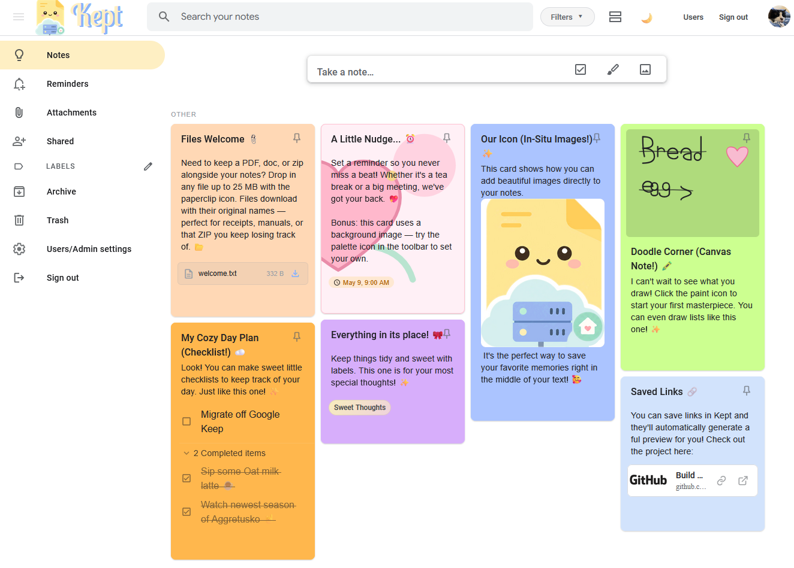

Your self-hosted sticky notes
Get the speed, simplicity, and visual ease of your favorite note-taking apps—while keeping full control of your own data.
👋 Welcome to Kept
Kept is designed for people who love fast, low-friction note capture. Whether you need a quick checklist, a drawing, or a simple text note, Kept makes it effortless to jot things down and organize them visually with colors and labels.

If you're migrating from Google Keep, we've even included a simple import tool to bring all your existing notes over seamlessly.
✨ What you get with Kept
📝 Rich Note Capture
Create text, checklist, image, and drawing notes. Drag and drop to sort checklists, pin important items, and organize with custom labels, colors, and backgrounds.
⏰ Reminders that Work
Set one-shot or scheduled reminders with snooze functionality. Get push notifications directly to your browser or phone, and sync them to Google Calendar or any CalDAV-friendly calendar if you want everything in one place.
📱 Installable on Mobile
Add Kept to your home screen on iOS or Android as a PWA, or use the native iPhone and iPad companion app for deeper iOS integration.
🍎 Native iOS Companion
Kept Notes on the App Store connects to your self-hosted server and adds native Apple Reminders integration plus Apple Intelligence-powered Smart Capture for local, private AI-assisted note creation and modification.
🤝 Real-Time Sharing
Collaborate with others! Share notes with other users on your instance and edit together in real-time, just like a modern document editor.
📦 Bring Your Notes
Moving over from Google Keep? Drop in a Google Takeout export and Kept can import your notes, checklists, labels, colors, drawings, and images in one go.
💾 Backups Without Drama
Schedule automatic daily, weekly, or monthly backups, or make one on demand before you poke at the server and pretend that was always the plan.
📤 Your Data, Your Exit
Export your notes whenever you like in JSON, CSV, or Markdown. Handy for backups, migrations, audits, or just the warm glow of knowing the door is open.
🔐 Privacy First
Your data stays with you. Includes local user accounts, custom profile avatars, and optional two-factor authentication (2FA) for extra security.
🚀 How to Install
The easiest and most reliable way to run Kept is using Docker. It keeps everything self-contained and takes just a few minutes.
git clone https://github.com/ericerkz/kept.git
cd kept
docker compose up -d --buildThat's it! Open your browser and go to http://localhost:6767. You'll be greeted by a friendly setup wizard to create your admin account.
Prefer to install directly without Docker?
If you have Node.js v24.x installed, you can run Kept natively using our automated scripts.
For Linux/macOS:
chmod +x install-native.sh
sudo ./install-native.shFor Windows (Run as Administrator):
.\install-native.ps1Reverse proxy examples
For public HTTPS access, point your domain at Kept and proxy traffic to 127.0.0.1:6767. Online status and live collaboration use WebSockets at /api/realtime, so that rule must come before the catch-all app proxy.
If you still need to set up HTTPS certificates, DigitalOcean has clear walkthroughs for Apache with Let's Encrypt and Nginx with Let's Encrypt. This is not a referral; we just love their detailed knowledgebase.
Apache
# Required once:
# sudo a2enmod proxy proxy_http proxy_wstunnel rewrite ssl
# sudo systemctl reload apache2
<VirtualHost *:80>
ServerName kept.example.com
Redirect permanent / https://kept.example.com/
</VirtualHost>
<IfModule mod_ssl.c>
<VirtualHost *:443>
ServerName kept.example.com
ProxyRequests Off
ProxyPreserveHost On
# WebSocket realtime: online status + live collaboration.
ProxyPass /api/realtime ws://127.0.0.1:6767/api/realtime
ProxyPassReverse /api/realtime ws://127.0.0.1:6767/api/realtime
# Normal app/API traffic.
ProxyPass / http://127.0.0.1:6767/
ProxyPassReverse / http://127.0.0.1:6767/
SSLEngine on
SSLCertificateFile /etc/letsencrypt/live/kept.example.com/fullchain.pem
SSLCertificateKeyFile /etc/letsencrypt/live/kept.example.com/privkey.pem
</VirtualHost>
</IfModule>Nginx
server {
listen 80;
server_name kept.example.com;
return 301 https://$host$request_uri;
}
server {
listen 443 ssl http2;
server_name kept.example.com;
ssl_certificate /etc/letsencrypt/live/kept.example.com/fullchain.pem;
ssl_certificate_key /etc/letsencrypt/live/kept.example.com/privkey.pem;
# WebSocket realtime: online status + live collaboration.
location /api/realtime {
proxy_pass http://127.0.0.1:6767/api/realtime;
proxy_http_version 1.1;
proxy_set_header Upgrade $http_upgrade;
proxy_set_header Connection "upgrade";
proxy_set_header Host $host;
proxy_set_header X-Forwarded-For $proxy_add_x_forwarded_for;
proxy_set_header X-Forwarded-Proto $scheme;
}
# Normal app/API traffic.
location / {
proxy_pass http://127.0.0.1:6767;
proxy_set_header Host $host;
proxy_set_header X-Forwarded-For $proxy_add_x_forwarded_for;
proxy_set_header X-Forwarded-Proto $scheme;
}
}Install on iOS and Android
Kept can be installed from the browser as a Progressive Web App. Once it is running from a real HTTPS address, reminder push notifications work on desktop browsers, Android, and iOS home-screen installs.
Native iPhone and iPad app
Kept Notes is available on the App Store as a companion app for your self-hosted Kept server. It adds native Apple Reminders integration and Apple Intelligence-powered Smart Capture, so you can create, update, share, label, archive, and trash notes from natural language while keeping AI processing local and private on supported devices.
The app has a nominal one-time cost. That helps cover the charge required to distribute Kept through the App Store.
Download on theApp StoreBefore you install
- Put Kept behind a public
https://domain. Mobile push will not work from plain HTTP or a raw local network address. Need help with certificates? See the Apache or Nginx Let's Encrypt tutorials linked above in the Reverse proxy section. - Set
VAPID_SUBJECTto your Kept URL, for examplehttps://kept.example.com. Docker users can uncomment it indocker-compose.yml; native installs can export it before starting the server.
iPhone or iPad
- Open your Kept URL in Safari.
- Tap Share, then Add to Home Screen.
- Open Kept from the new Home Screen icon, not from the Safari tab.
- Sign in and allow notifications when Kept asks.
iOS only allows web push for installed home-screen web apps, so the Safari tab is just for installing.
Android
- Open your Kept URL in Chrome or another browser with PWA support.
- Use the browser menu and choose Install app or Add to Home screen.
- Open Kept from the installed app icon and allow notifications when prompted.
If notifications do not arrive
- Check that the installed app is using your HTTPS domain.
- Confirm notifications are allowed in the browser or OS settings.
- On iOS, remove and reinstall the Home Screen app after changing domains or VAPID settings.
💾 Peace of mind with Backups
We know how important your notes are, so Kept makes protecting them simple.
- Automated Schedules: Set Kept to automatically back up your data daily, weekly, or monthly. You never have to think about it.
- One-Click Restore: If you ever need to set up a new server or recover your data, you can upload your backup file during setup to restore everything instantly.
Your data is safely stored in a single folder (./data), making it extremely easy to copy, move, or sync to your personal cloud storage.
Privacy Policy
Short version: Kept is self-hosted. Your notes, and all data, live on the server you choose.
- What Kept stores: Your notes, uploads, reminders, account details, and settings live in your Kept instance.
- Who controls it: Whoever runs the server controls that data. If that is you, it is your stuff on your machine.
- Third-party services: Calendar syncing only happens if you turn it on and connect Google Calendar or CalDAV yourself.
- Moving your data: You can back it up, export it, delete it, or move it somewhere else.
- This docs site: This page has no accounts, forms, cookies, ads, or analytics scripts. Your web host may still keep normal server logs.
This is not fancy legal armor. It is the basic truth of the app: Kept is built so your notes stay under your control.